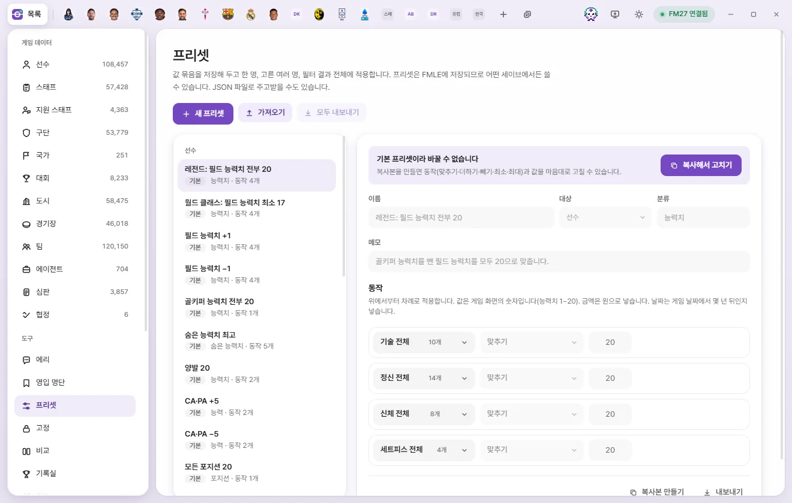
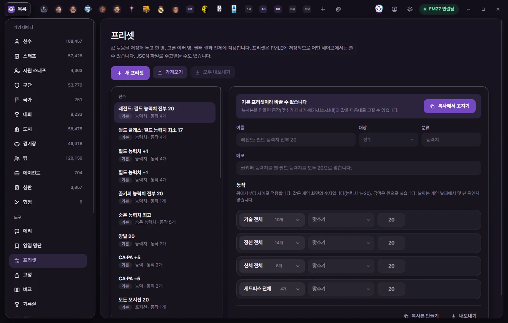
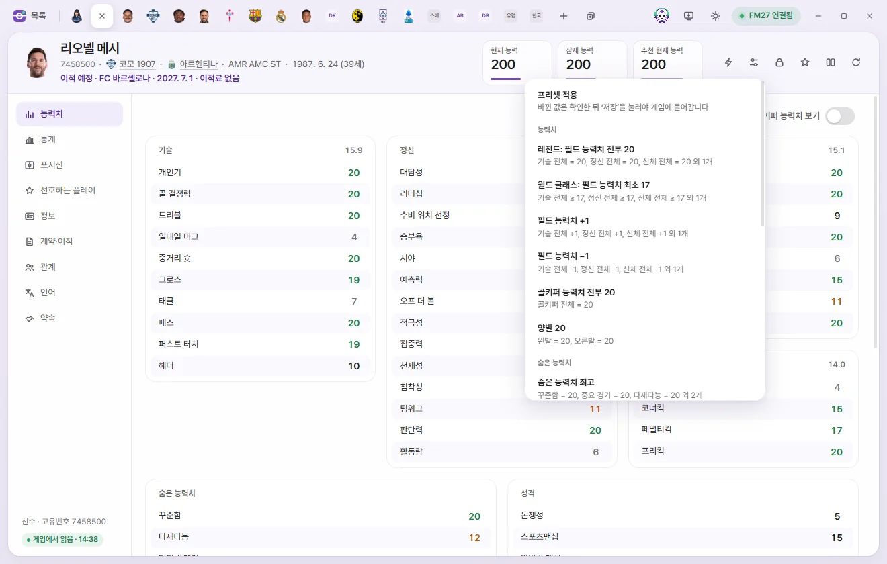
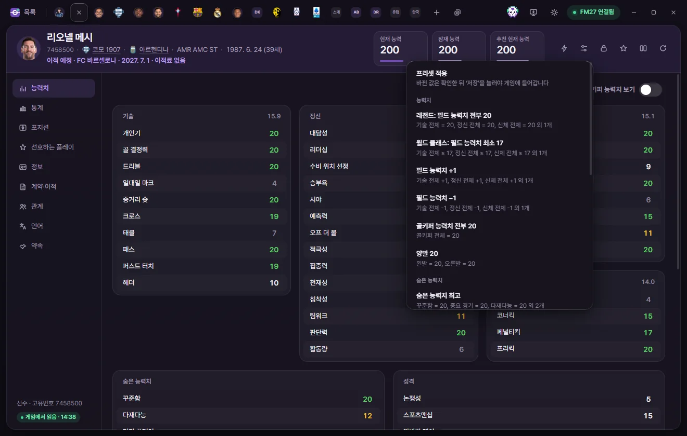

도구
프리셋
프리셋은 '이 값을 몇으로' 같은 동작을 묶어 저장해 둔 것입니다. 한 명의 탭에 채우거나, 고른 여러 명·필터 결과 전체에 바로 적용합니다. 프리셋은 FMAX에 저장되어 어떤 세이브에서든 쓸 수 있습니다.



프리셋이란
프리셋 하나에는 대상 종류(선수, 스태프, 구단 등) 하나와 동작 여러 개가 들어 있습니다. 동작은 '기술 전체를 20으로 맞추기', 'CA를 5 더하기'처럼 한 값이나 한 묶음에 무엇을 할지입니다.
- 프리셋은 FMAX에 저장됩니다. 세이브와 상관없이 어떤 세이브에서든 쓸 수 있습니다.
- JSON 파일로 내보내고 가져올 수 있어서 다른 사람과 주고받을 수 있습니다.
- 왼쪽 도구 목록의 프리셋을 누르면 이 화면이 열립니다.
적용하는 곳 두 가지: 탭과 여러 명
같은 프리셋이라도 어디서 적용하느냐에 따라 게임에 들어가는 때가 다릅니다.
| 적용한 곳 | 게임에 들어가는 때 | 되돌리기 |
|---|---|---|
| 편집 탭 하나 | 탭의 값만 바뀝니다. '저장'을 눌러야 게임에 들어갑니다 | 저장하기 전에는 게임에 아무것도 들어가지 않습니다 |
| 여러 명(목록·오른쪽 클릭·구단 선수단 표) | 확인 창에서 '적용'을 누르면 게임에 바로 씁니다 | 알림의 '되돌리기'로 한 번 되돌릴 수 있습니다 |
편집 탭에서 적용하기



- 편집 탭 위쪽 오른쪽의 프리셋 단추(가로 막대 두 개 모양)를 누릅니다.
- 메뉴에서 프리셋을 고릅니다. 이 종류의 프리셋만 분류별로 나옵니다.
- 탭의 값이 바뀝니다. 바뀐 값을 확인합니다.
- '저장'을 누르면 게임에 들어갑니다.
탭은 게임에서 읽은 뒤에만 적용할 수 있습니다. 바뀌는 값이 없으면 '‘이름’로 바뀌는 값이 없습니다'라고 알립니다.
메뉴 아래쪽에는 단추가 두 개 있습니다.
- 지금 값으로 프리셋 만들기: 이 탭에 보이는 값(바꾸고 아직 저장하지 않은 값도 포함)으로 새 프리셋을 만들어 프리셋 화면에 엽니다. 능력치·성격·포지션 같은 숫자 값이 들어가고, 금액·평판·몸 상태·계약·기본 정보·능력(CA·PA)·외모·선호하는 플레이는 빠집니다. 이름은 '…의 값', 분류는 '템플릿'입니다. 필요 없는 줄을 지우고 '저장'을 눌러야 프리셋으로 남습니다.
- 프리셋 관리: 프리셋 화면으로 갑니다.
여러 명에게 적용하기
여러 명에게 적용하는 길은 이렇습니다.
- 목록에서 여러 명을 고른 뒤 아래 막대의 '선택한 N명에 프리셋'.
- 필터나 검색으로 좁힌 뒤(아무도 고르지 않았을 때) 아래 막대의 '결과 N명에 프리셋'. 필터 결과 전체에 적용합니다.
- 목록에서 오른쪽 클릭 → '수정' 묶음의 '프리셋 적용' 또는 '직접 정해서 적용'. 한 명이든 고른 여러 명이든 됩니다.
- 구단 탭의 선수단·스태프 표 위쪽의 '프리셋'. 그 표의 사람 모두에게 적용합니다(구단).
순서는 같습니다.
- 메뉴 제목이 '…명에 프리셋 적용 · 바로 게임에 씁니다'입니다. 프리셋을 고릅니다.
- 'N명에 ‘이름’ 적용' 확인 창이 뜹니다. 하는 일과 '적용하면 게임에 바로 들어갑니다'가 적혀 있습니다.
- '적용'을 누르면 게임에서 지금 값을 읽고, 새 값을 계산해 씁니다. 진행이 '게임에 쓰는 중 N / 전체'로 나옵니다.
- 끝나면 'N명에 ‘이름’를 적용했습니다' 알림이 뜹니다. 이미 같은 값이던 사람, 실패한 사람, 게임에서 찾지 못한 사람 수도 함께 나옵니다.
되돌리기: 알림에 '되돌리기' 단추가 약 9초 동안 나옵니다. 누르면 이번에 바꾼 값을 적용 전으로 되돌리고 '‘이름’ 적용을 되돌렸습니다 N / 전체'라고 알립니다. 가장 최근에 적용한 한 번만 되돌릴 수 있습니다. 그 사이 게임이나 다른 편집이 바꾼 값은 건드리지 않습니다.
열려 있는 그 사람들의 탭은 새 값으로 다시 읽힙니다. 고정한 값에 프리셋을 쓰면 고정 값도 새 값으로 바뀝니다(고정).
직접 정해서 적용
저장해 둔 프리셋 없이 이번 한 번만 쓸 수정을 정합니다.
- 여러 명 메뉴 아래의 '직접 정해서 적용'(또는 오른쪽 클릭의 같은 이름)을 누릅니다.
- 프리셋 화면이 열리고 맨 위에 '…에 적용할 동작을 정하세요' 띠가 나옵니다.
- '동작 추가'로 동작을 넣습니다.
- 띠의 '적용'을 누르면 위와 같은 확인 창을 거쳐 게임에 바로 씁니다. 저장하지 않아도 됩니다. '저장'을 누르면 프리셋으로도 남습니다.
- 그만두려면 띠의 '그만두기'를 누릅니다.
고른 뒤에 게임에서 다른 세이브를 열면 '세이브가 바뀌어서 적용하지 않았습니다'라고 알립니다. 지금 세이브에서 대상을 다시 골라 주세요.
기본 프리셋
FMAX에 처음부터 들어 있는 프리셋입니다. 목록에 기본 표시가 붙습니다.
| 대상 | 이름 | 하는 일 |
|---|---|---|
| 선수 | 레전드: 필드 능력치 전부 20 | 기술·정신·신체·세트피스 전체를 20으로 맞춥니다(골키퍼 능력치는 그대로) |
| 선수 | 월드 클래스: 필드 능력치 최소 17 | 같은 묶음에서 17보다 낮은 값만 17로 올립니다 |
| 선수 | 필드 능력치 +1 | 같은 묶음 모두 1 더합니다 |
| 선수 | 필드 능력치 −1 | 같은 묶음 모두 1 뺍니다 |
| 선수 | 골키퍼 능력치 전부 20 | 골키퍼 묶음을 20으로 맞춥니다 |
| 선수 | 숨은 능력치 최고 | 꾸준함·중요 경기·다재다능 20, 더티 플레이·부상 빈도 1 |
| 선수 | 양발 20 | 왼발·오른발 20 |
| 선수 | CA·PA +5 | 현재 능력(CA)과 잠재 능력(PA)에 5 더합니다 |
| 선수 | CA·PA −5 | CA와 PA에서 5 뺍니다 |
| 선수 | 모든 포지션 20 | 포지션 숙련도 묶음을 모두 20으로 |
| 선수·스태프 | 모범 성격: 성격 20, 논쟁성 1 | 적응력·포부·의리·압박감 대처·프로 의식·스포츠맨십·참을성 20, 논쟁성 1 |
| 선수 | 회복: 컨디션·경기 감각 100% | 컨디션·경기 감각을 100%로, 피로를 0으로. 부상은 다루지 않습니다 |
| 선수 | 격려: 사기 최고 | 사기를 최고로, 피로를 0으로 |
| 선수 | 상태 악화: 사기·컨디션 최저 | 사기 최저, 컨디션 50%, 경기 감각 30%. 상대 팀 선수에게 쓰는 프리셋입니다 |
| 스태프 | 능력 최고: CA·PA 200 | CA·PA 200 |
| 스태프 | 스태프 능력치 전부 20 | 코칭·정신·지식·의료 능력치 20. 구단주 항목(간섭, 인내심 등)은 그대로 |
| 구단 | 시설 전부 20 | 시설 묶음 20 |
| 구단 | 부자 구단: 잔고 … | 잔고가 5억 파운드보다 적으면 5억 파운드로 올립니다(이름의 금액은 고른 통화로 나옵니다) |
| 구단 | 이적 예산 …, 주급 예산 … | 이적 예산 최소 3억 파운드, 주급 예산 최소 5백만 파운드 |
| 구단 | 구단 평판 최고 | 평판 10000 |
| 심판 | 심판 능력치 전부 20 | 심판 능력치 묶음 20 |
| 대회 | 대회 평판 최고 | 평판 200 |
| 경기장 | 수용 인원 10만 | 수용 인원과 좌석 수를 최소 10만으로 |
기본 프리셋은 바꿀 수 없습니다. 고르면 맨 위에 '기본 프리셋이라 바꿀 수 없습니다'와 '복사해서 고치기' 단추가 나옵니다. 누르면 '이름 복사본'이 만들어지고, 그것은 마음대로 고칠 수 있습니다.
프리셋 만들기와 고치기
- 위쪽 '새 프리셋'을 누릅니다. 지금 보던 목록의 종류로 '새 프리셋'이 열립니다.
- 이름(60자까지), 대상(종류), 분류(예: 능력치, 30자까지), 메모(어떤 때 쓰는지, 120자까지)를 적습니다. 분류는 프리셋 메뉴에서 묶음 제목이 됩니다.
- '동작 추가'를 누르고 칸을 고릅니다. 위쪽 검색 칸으로 '칸 이름 검색'을 할 수 있고, 묶음 제목 옆 '묶음 전체'를 누르면 그 묶음의 모든 칸이 한 동작이 됩니다.
- 동작마다 방법과 값을 정합니다(아래 표).
- '저장'을 누릅니다. '‘이름’를 저장했습니다. 어떤 세이브에서든 쓸 수 있습니다'가 뜹니다.
고친 뒤 저장하지 않았으면 아래에 '저장하지 않은 변경이 있습니다'가 보입니다. 이 상태로 다른 프리셋을 열거나 새로 만들려 하면 변경을 버릴지 묻습니다.
동작이 하나라도 있으면 대상은 바꿀 수 없습니다. 대상을 바꾸려면 동작을 모두 지우세요.
동작의 방법
| 방법 | 하는 일 |
|---|---|
| 맞추기 | 값을 그 숫자로 맞춥니다 |
| 더하기·빼기 (빼려면 −값) | 지금 값에 더합니다. 빼려면 −5처럼 적습니다. '결과는 최소~최대 안에서'를 적으면 결과가 그 범위를 넘지 않습니다 |
| 최소 보장 | 지금 값이 그보다 낮을 때만 그 값으로 올립니다 |
| 최대 제한 | 지금 값이 그보다 높을 때만 그 값으로 내립니다 |
| 오늘부터 N년 뒤로 | 날짜 칸(계약 만료일 등). 게임 날짜에서 N년 뒤로 맞춥니다(0~50년) |
| 오늘부터 N년 뒤보다 이르면 늦추기 | 날짜가 N년 뒤보다 이를 때만 N년 뒤로 늦춥니다 |
- 동작은 위에서부터 차례로 적용합니다. 같은 칸에 동작이 두 개면 앞 동작의 결과에 뒤 동작을 합니다.
- 값은 게임 화면의 숫자입니다(능력치 1~20). 결과는 그 칸이 받는 범위 안으로 맞춰집니다.
- 금액은 설정에서 고른 통화로 넣습니다.
- 날짜가 없는 사람(자유 계약 선수의 계약 만료일 등)은 날짜 동작을 해도 그대로입니다.
- 동작 오른쪽 휴지통 단추로 동작을 뺍니다.
게임 에디터 기능과 은퇴 막기 넣기
'동작 추가'의 칸 목록 아래에는 값이 아닌 동작도 있습니다.
- 게임 에디터 기능 (바로 반영): 선수는 모든 부상·출장 정지·불만 제거, 능력치 고정·풀기, 취업 허가 주기·빼기, 국가대표 은퇴·취소, 병역 마침·면제·기록 없애기. 스태프는 여자로·남자로 바꾸기. 동작 줄에 '게임에 바로 씁니다'라고 나옵니다(게임 에디터).
- 편의 기능 묶음의 은퇴 막기 목록에 넣기(선수·스태프): 편의 기능 화면의 은퇴 막기 목록에 넣습니다. 동작 줄에 '목록에 넣습니다'라고 나옵니다. 편의 기능이 켜져 있으면 은퇴 계획을 지웁니다. '나이 제한도 풀기'가 켜져 있으면 선수·스태프 각각 128명까지 넣고, 넘는 사람은 알림에 '못 넣음'으로 셉니다.
게임 에디터 기능이 든 프리셋을 처음 적용할 때는 게임 에디터와 같은 '세이브를 백업해 두셨습니까?' 확인이 한 번 뜹니다.
복사본, 삭제, 내보내기, 가져오기
| 단추 | 하는 일 |
|---|---|
| 복사본 만들기 | 지금 프리셋을 '이름 복사본'으로 복사해 엽니다. 저장해야 남습니다 |
| 삭제 | 내가 만든 프리셋을 지웁니다. 되돌릴 수 없습니다 |
| 내보내기 | 이 프리셋 하나를 JSON 파일로 다운로드 폴더에 저장합니다 |
| 모두 내보내기 | 내가 만든 프리셋 전부를 파일 하나로 다운로드 폴더에 저장합니다. 기본 프리셋은 들어가지 않습니다 |
| 가져오기 | FMAX에서 내보낸 프리셋 JSON 파일을 골라 내 프리셋에 더합니다 |
- 내보내면 '다운로드 폴더에 저장했습니다' 알림이 뜨고, '폴더에서 보기'로 파일을 볼 수 있습니다.
- 가져올 때 이 게임 버전에 없는 값은 빼고 '이 게임 버전에 없는 값 N개는 뺐습니다'라고 알립니다. 가져올 것이 없으면 'FMAX에서 내보낸 프리셋 JSON 파일인지 확인해 주세요'라고 알립니다.
- 기본 프리셋도 '내보내기'로 하나씩 내보낼 수 있습니다.